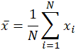
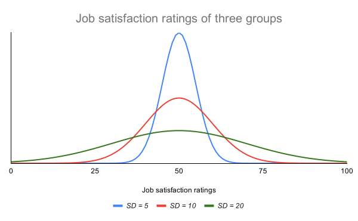
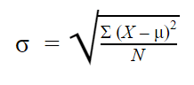
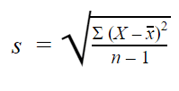

Please provide numbers separated by a comma
| Min | |
| Max | |
| Count | |
| Sum | |
| Median | |
| Mode | |
| Mean (Average) | |
| Geometric mean | |
| Standard Deviation |
The mean (average) of a data set is found by adding all numbers in the data set and then dividing by the number of values in the set. The word mean, which is a homonym for multiple other words in the English language, is similarly ambiguous even in the area of mathematics. Depending on the context, whether mathematical or statistical, what is meant by the "mean" changes. In its simplest mathematical definition regarding data sets, the mean used is the arithmetic mean, also referred to as mathematical expectation, or average. In this form, the mean refers to an intermediate value between a discrete set of numbers, namely, the sum of all values in the data set, divided by the total number of values. The equation for calculating the arithmetic mean is virtually identical to that for calculating the statistical concepts of population and sample mean, with slight variations in the variables used:
The geometric mean in mathematics is a type of average that uses the product of the values in a set to indicate central tendency. This is in contrast to the arithmetic mean that performs the same function using the sum of the values in the set rather than their products. The geometric mean is useful in cases where the values being compared vary largely. Imagine a car that is rated on a scale of 0-5 for fuel efficiency, and a scale of 0-100 for safety. If the arithmetic means were used, the safety of the vehicle would be given far more weight, since a small percentage change on a larger scale will result in a larger difference than a large percentage change on a smaller scale; a change of fuel efficiency rating from 2 to 5 which is a 250% increase in rating would be overshadowed by a 6.25% rating change of 80 to 85 if only the arithmetic mean were considered. The geometric mean accounts for this by normalizing the ranges being averaged, resulting in none of the ranges dominating the weighting. Unlike the arithmetic mean, any given percentage change in the geometric mean has the same effect on the geometric mean. The equation for calculating the geometric mean is as follows:
In statistics and probability theory, the median is the value separating the higher half from the lower half of a data sample, a population, or a probability distribution. For a data set, it may be thought of as "the middle" value. The basic feature of the median in describing data compared to the mean (often simply described as the "average") is that it is not skewed by a small proportion of extremely large or small values, and therefore provides a better representation of a "typical" value. Median income, for example, may be a better way to suggest what a "typical" income is, because income distribution can be very skewed. The median is of central importance in robust statistics, as it is the most resistant statistic, having a breakdown point of 50%: so long as no more than half the data are contaminated, the median is not an arbitrarily large or small result.
Mode means a value or a number that appears most frequently in a dataset. Sometimes we may need to find the value, which is occurring more frequently in the dataset. In such cases, we find the mode for the set of given data. There may or may not be a modal value for a given set of data. For data without any repeating values, there might be no mode at all. Also, we can find data with only one mode, two modes, three modes, or multiple modes. This depends on the given dataset.
Where,
Standard deviation is a useful measure of spread for normal distributions.In normal distributions, data is symmetrically distributed with no skew. Most values cluster around a central region, with values tapering off as they go further away from the center. The standard deviation tells you how spread out from the center of the distribution your data is on average. Many scientific variables follow normal distributions, including height, standardized test scores, or job satisfaction ratings. When you have the standard deviations of different samples, you can compare their distributions using statistical tests to make inferences about the larger populations they came from.
The standard deviation reflects the dispersion of the distribution. The curve with the lowest standard deviation has a high peak and a small spread, while the curve with the highest standard deviation is more flat and widespread. Different formulas are used for calculating standard deviations depending on whether you have data from a whole population or a sample.
Population standard deviation: When you have collected data from every member of the population that you’re interested in, you can get an exact value for population standard deviation. The population standard deviation formula looks like this:
| Formula | Explanation |
|---|---|
|  |
|
Sample standard deviation: When you collect data from a sample, the sample standard deviation is used to make estimates or inferences about the population standard deviation. The sample standard deviation formula looks like this:
| Formula | Explanation |
|---|---|
|  |
|